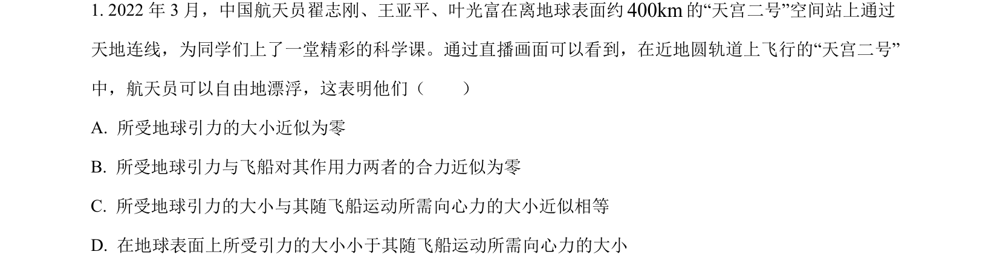
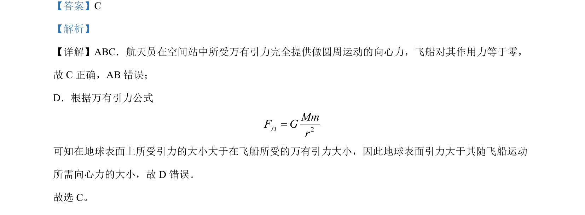

考点：万有引力定律 向心力 圆周运动

航天员在空间站中万有引力提供向心力，飞船对其作用力为零。

📄 原 PDF 第 1 页：
素材/真题/吉林/2008-2024·（吉林）物理高考真题/2022年高考物理试卷（全国乙卷）（解析卷）.pdf
【答案】C 【解析】 【详解】ABC．航天员在空间站中所受万有引力完全提供做圆周运动的向心力，飞船对其作用力等于零， 故 C正确，AB 错误； D．根据万有引力公式 2MmF Gr=万 可知在地球表面上所受引力的大小大于在飞船所受的万有引力大小，因此地球表面引力大于其随飞船运动 所需向心力的大小，故 D 错误。 故选 C。